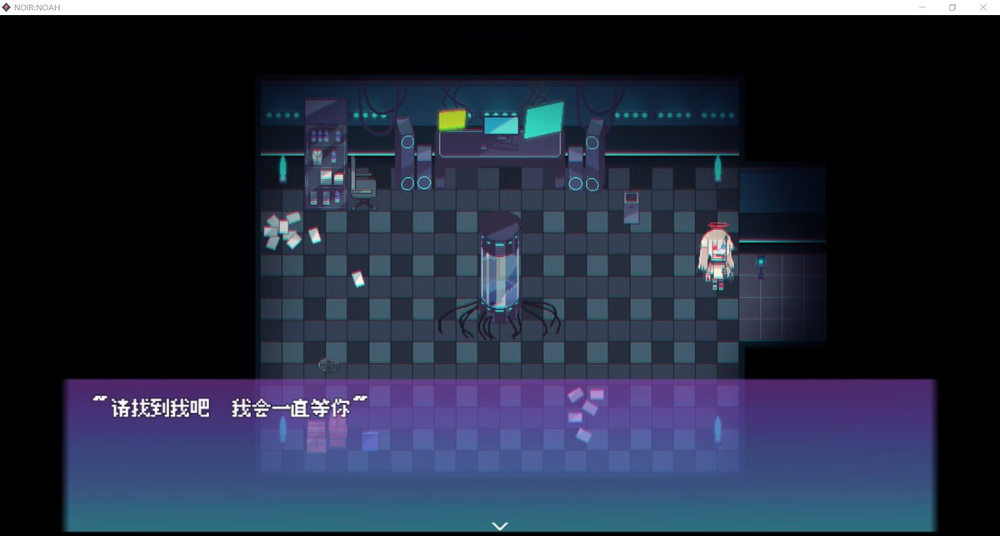

冰棍好烫喵 🍥🧊🍔🍟🍜🍣🍙🍧🍮🍩☕️💊🤤
@bghtnya
@KiwiKazamaCat 咸鱼喵喵我也玩

🐈KazamaRio🐈
@KiwiKazamaCat
有没有不打fps的，多人游戏玩的少的，经常听歌可以一起挂网易云的，喜欢打单人游戏的，打rpg的（如pray game，king exit），打类银河恶魔城的（如咸鱼喵喵，tevi，rabiribi），推剧情向galgame的（如近月，G弦，纸魔），多愁善感悲春伤秋喜欢分析情感或者故事剧情的🥺
啊啊啊，你们怎么都在打fps？？？ https://t.co/NsONEH465Q https://t.co/9B8sqlSnmz